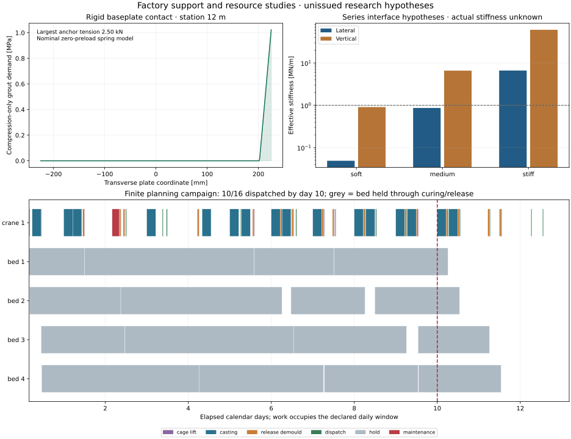

Unissued research hypotheses. Original factory examples are retained separately. This packet comes from a common design job; it is not a fabrication, lift or production release.

| Interface case | Lateral MN/m | Vertical MN/m | Lateral load factor |
|---|---|---|---|
| actual-unmeasured | unknown | unknown | unknown |
| soft-hypothesis | 0.0488 | 0.9079 | 0.612 |
| medium-hypothesis | 0.8652 | 6.6030 | 2.570 |
| stiff-hypothesis | 6.6349 | 60.8079 | 7.247 |
| Plate width | Fixed-hole edge | CV5 diameter screen |
|---|---|---|
| 350 mm | -1.0 mm | True |
| 450 mm | 49.0 mm | False |
32 final-force, matching-station/sign cases per nominal return rail. Anchor springs use gross bar area; post/plate/weld, thread/embedment, grout and site resistance remain unqualified. Ideal end-pin grounding and staged stressing/release torsion remain unresolved.
10 of 16 beams dispatched within 10 calendar days; 6 remain at the deadline. The accepted-equivalent planning value is 9.5, using an unmeasured yield hypothesis. Each Pi25 pour uses 33 assumed batches and reserves mixer/crane/crew for 5.20 hours. These are finite policy results, not steady-state capacity or supplier performance.
UK manufacturer; Dinnington/Sheffield factory documented. Exact offered bar, fittings and raw-stock origin require supplier certification.
Return a complete configuration-specific holding-down assembly and stiffness/load path proposal. A 26 mm hole is smaller than the minimum published carbon bar diameter; the 32 mm concept hole remains unqualified for the actual thread.
Official source 1 · Official source 2
Northern Ireland manufacture described by Rapid; UK manufacture, distinguished from Great Britain. Imported components and offered assembly origin require certification.
Confirm useful output and cycle for the specified beam mix and 32.34055 m3 Pi25 pour hypothesis. The 1 m3 and task durations are OSR assumptions, not published RP1000 performance.
Official source 1 · Official source 2 · Official source 3
Full study · Support demands · Resource reservations · Tasks · Unsent RFQs